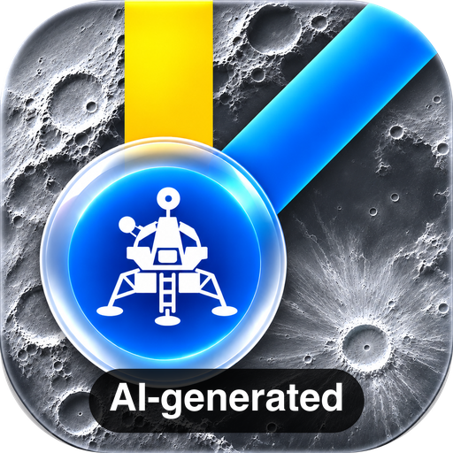
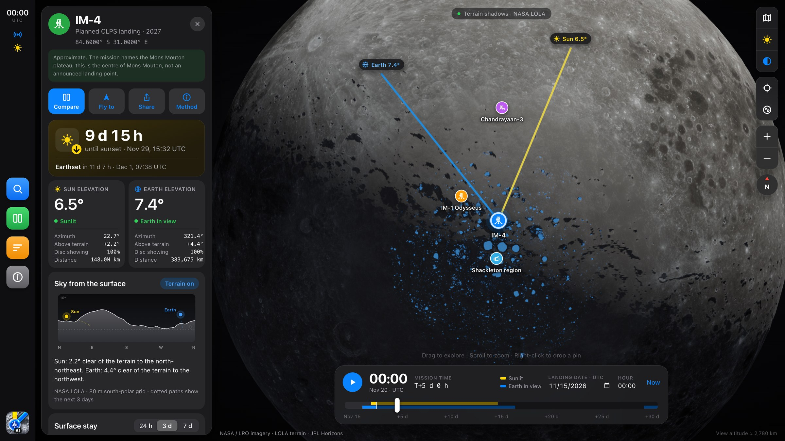
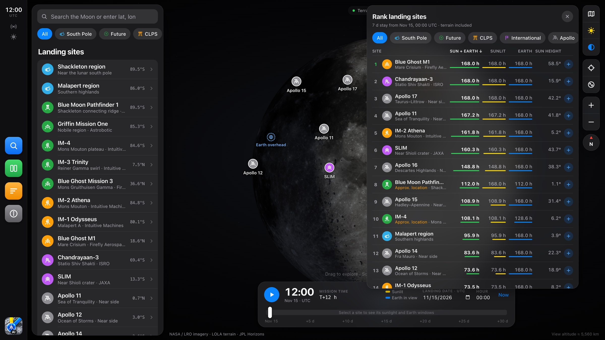
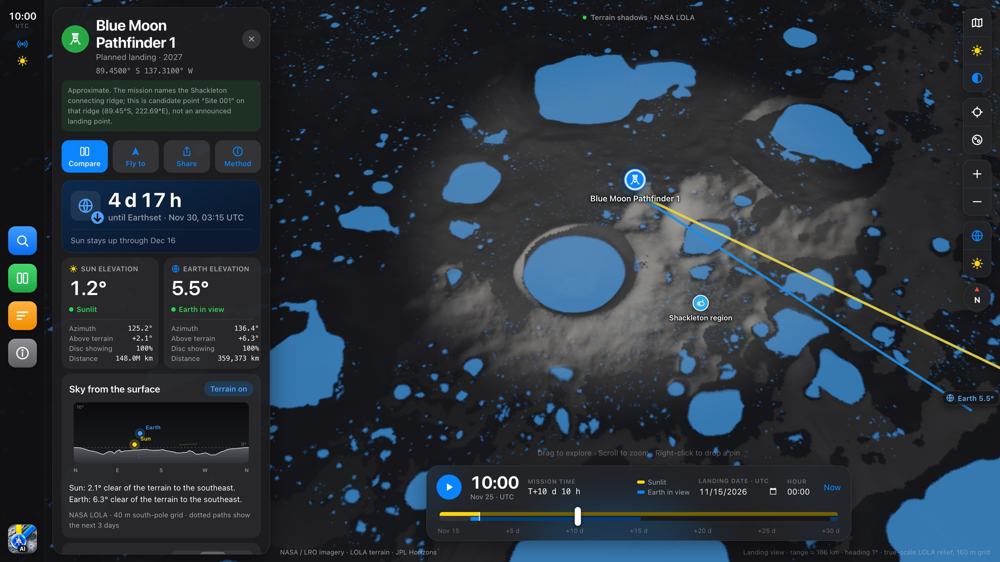

NASA SPACE APPS CHALLENGE 2026

Pick a site. Pick a date. See your Sun and Earth windows on the Moon.
CHALLENGE
Lunar Landing Site Navigator
TEAM
Zoriana · Christian Munoz
TRY IT
zoriana.fly.dev
THE PROBLEM
1.5°
The Moon’s tilt. At the poles the Sun skims the horizon all year, so hills and crater rims decide who gets light.
Sun
Power and warmth. A lander in shadow is living on its batteries.
Earth
A direct radio line. Behind a ridge there is no link home.
THE APP
Live Sun and Earth positions from NASA/JPL Horizons for the exact spot.
Real LOLA terrain decides what is hidden, and names the ridge in the way.
A 30-day timeline shows every sunlit and Earth-in-view window.

COMPARE
Sorted by hours with Sun and Earth together: power and a link at once.
Apollo, Chandrayaan-3, SLIM and CLPS landings beside announced future targets.
Compare four site-and-date options side by side, export CSV, share a link.

LANDING VIEW
True-scale LOLA terrain under a tilted camera that faces Earth.
Blue patches: NASA’s map of ground that never sees the Sun.
The Sun is measured as a disc, so first light and full Sun are both reported.

HOW IT WORKS
JPL HORIZONS
Sun and Earth direction and distance for any point on the Moon, any date from 1950 to 2099.
LOLA ELEVATION
40 m and 80 m polar grids plus a global grid form each site’s terrain skyline.
LOLA PERMANENT SHADOW
NASA’s map of permanently shadowed regions, 75°S to the pole.
LROC MOSAIC
The 8K Moon imagery on the globe, from the Lunar Reconnaissance Orbiter.
BLUE MARBLE
Earth in the lunar sky, at its true size, distance and phase.
PARTNER SITES
JAXA SLIM and ISRO Chandrayaan-3 landing locations.
0.06°
Checked against Apollo 11: the app’s Sun elevation at touchdown matches the Apollo Lunar Surface Journal’s JPL-based figure to 0.06°.
LIMITS AND NEXT STEPS
Geometry only: sunlight is not usable power, and Earth in view is not a working radio link.
Future mission points are approximate, and labelled so.
55 automated tests. Every number traces to a NASA source.
A where-to-land heat map from NASA’s average-illumination maps.
North-pole shadows, eclipses and relay satellites.
Slope and hazard layers for landing safety.
LIVE APP
zoriana.fly.dev
CODE
github.com/sftimeless/zoriana
Code written with AI coding assistance under human direction. The app icon is an AI-generated image, marked as such. Not affiliated with or endorsed by NASA.